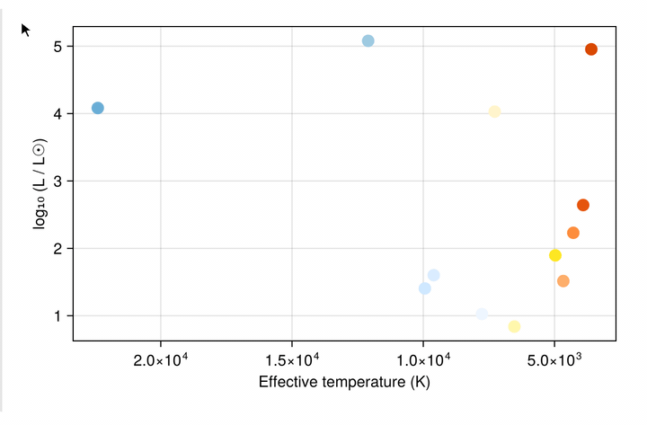
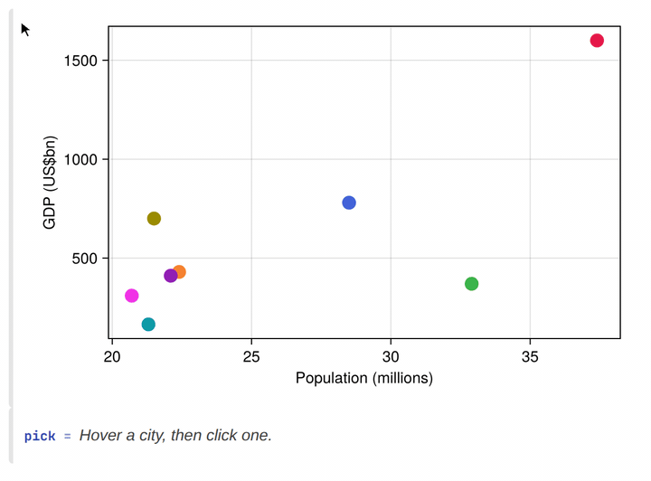
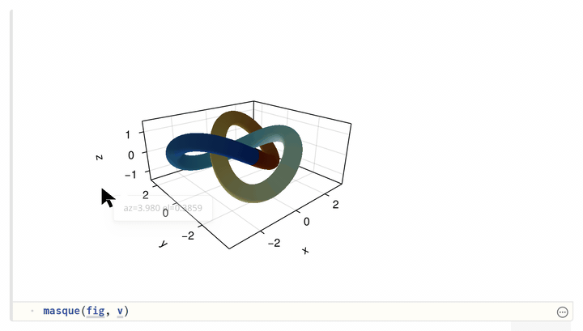
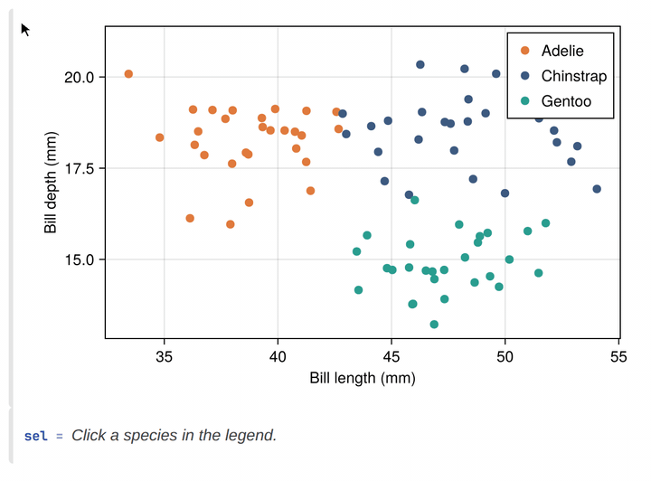

Masque.jl
Masque adds an interactive layer over Makie figures inside a Pluto notebook. Add rich tooltips, hover interactions, selections, and more to your figures.
Rich tooltips

Hold your pointer over a point, bar, heatmap cell, or polygon and a customizable tooltip appears on the figure. For templates and styling, see Tooltips.
Dynamic selections

When you click a mark to select it, @bind captures that selection, the same way a PlutoUI slider does. Downstream cells re-run with the selected row, bar, or cell. For more information, see Click marks and Selection.
Interactive view controls

Drag a 2D axis to pan, or an Axis3 to orbit. The camera stays on the figure; it is not a selection. For more information, see Pan and orbit.
Highlight from the legend

Click a legend entry to highlight the traces it labels, and a cell that reads that pick can fade the rest. See Legend.
Inspect a static export
Hover and click still work in a Pluto HTML export of the notebook. Re-running Julia cells needs a live session. CairoMakie is the default; WGLMakie is the live canvas when you want animation, large data, or 3D you can orbit. See Backends.
Where to go next
- Getting started — install, overlay a figure, and read a click
- Constructors — every built-in kind, its constructor, and its default payload
- Selection — reacting to clicks, linking plots, persisting a highlight
- Legend — hover/click a
Makie.Legendentry to highlight the trace(s) it labels - Tooltips —
masque"..."templates and styling - Custom hits —
RegionInteractable/FunctionInteractable - Backends —
:cairovs:webgl, and when to reach for which - Troubleshooting — common errors and what causes them
- Gallery — a screenshot and a player for each demo
- API — full docstrings